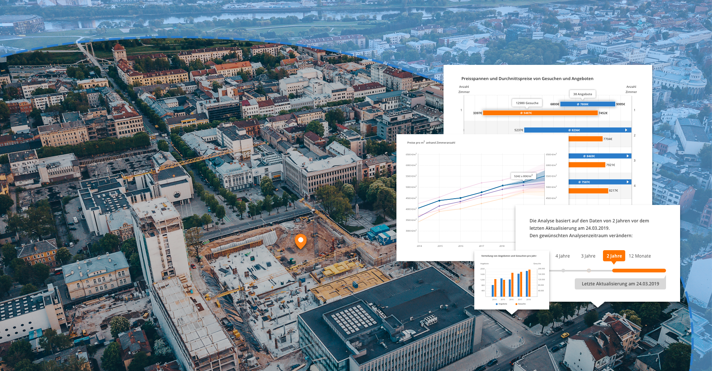
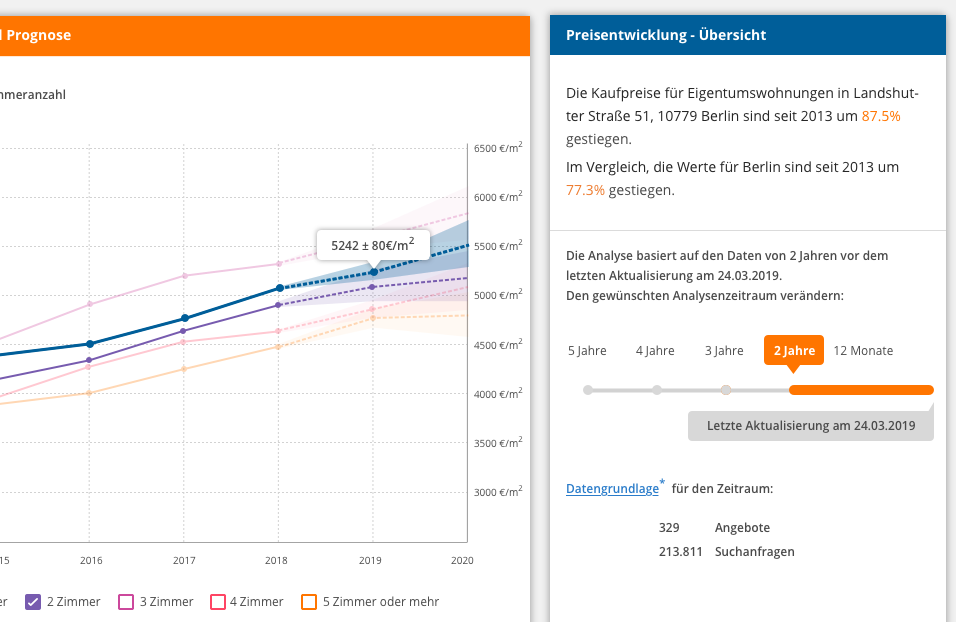
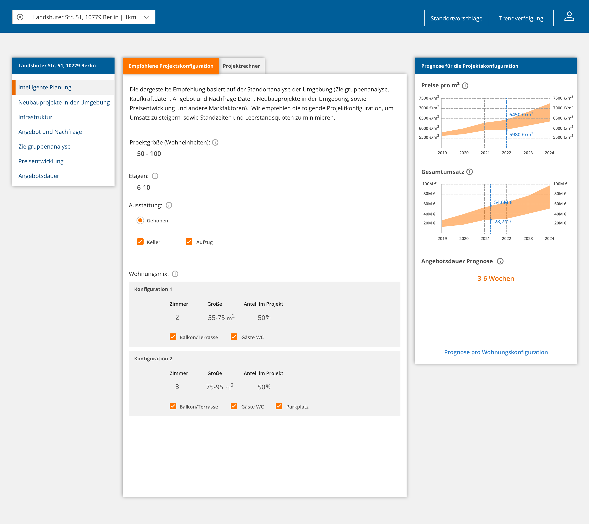
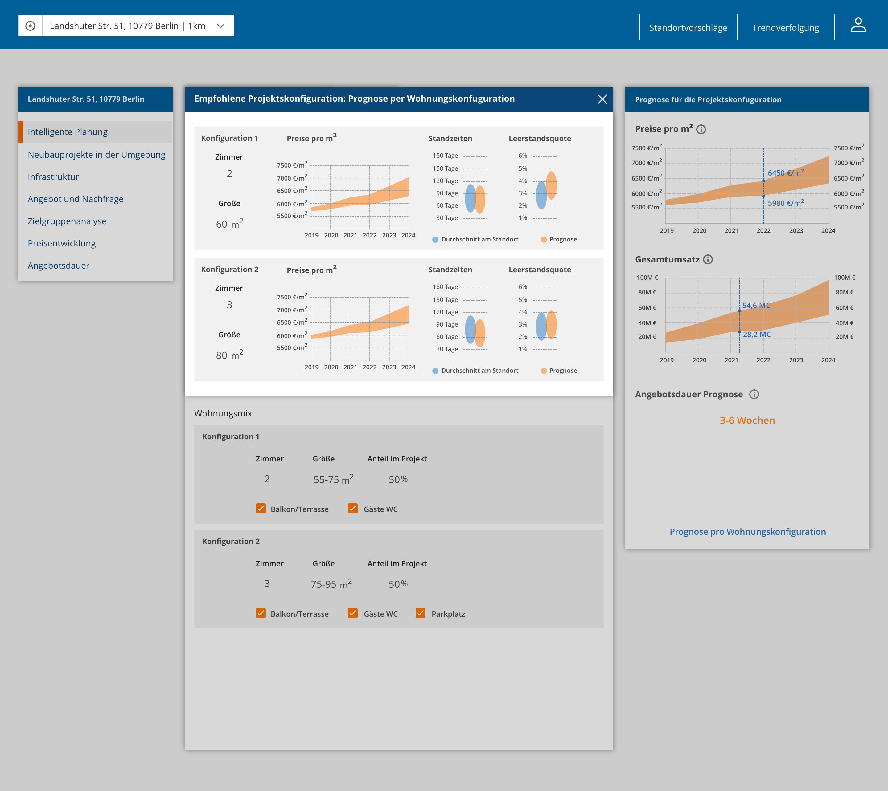
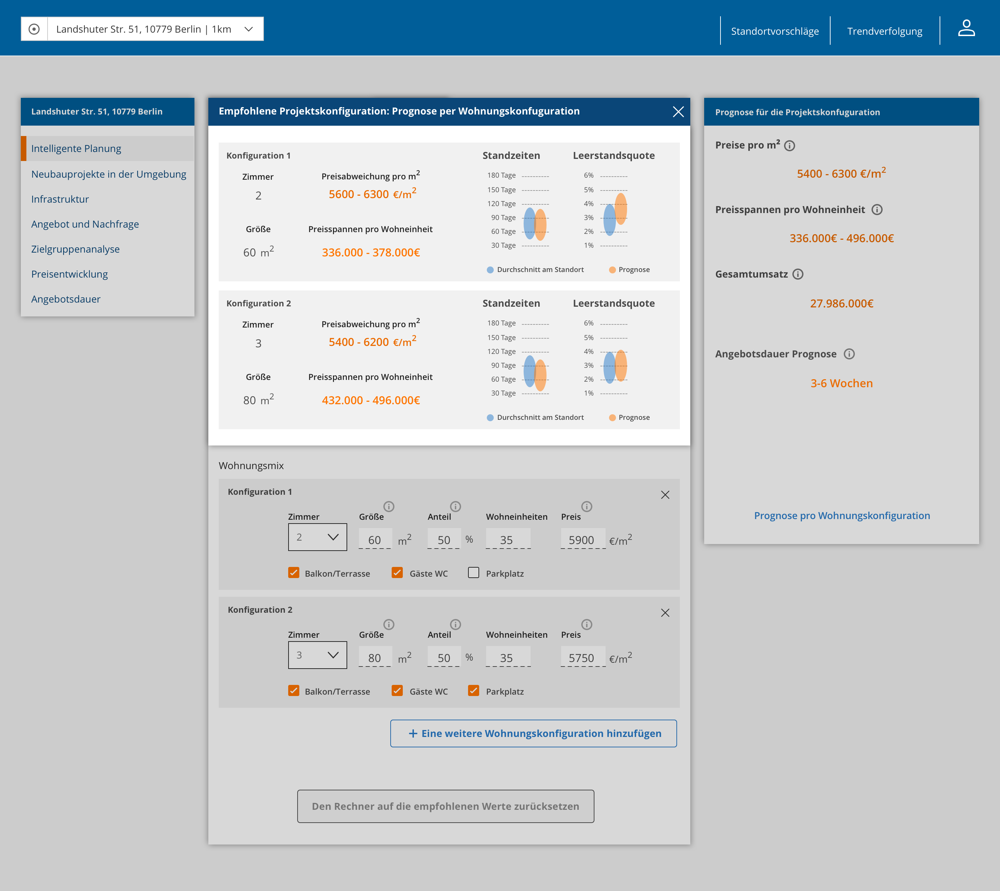

Interactive Data Tool for
Property Developers
Background
As a Senior UX designer at IS24, I've led the product discovery work for the data product. It has started following a successful business pitch, which identified a gap in the property developers' data products market and an opportunity to monetize IS24's search data.
Scenario and Problem
When a property developer considers buying a land plot for his project, he needs to analyze extensive data regarding the area to maximize the revenue. The goal of the tool is to solve the following customer problems and answer the following questions:
- Is it worth buying this land plot? - Price analysis and prediction, competitors analysis (existing projects in the area)
- What should I build on this land plot? - Demand structure analysis
- Who buys real estate in the area? - Target market analysis
Solution
Currently, most property developers in Germany use PDF real estate and demographic reports from research institutions or reports from other real estate companies specializing in market analysis. These reports are more like well-designed PDF magazines.
Accessibility of the data analysis, ability to play with input data, dig into the charts, makes the interactive data tool extremely attractive to customers and would constitute one of the main product USPs, besides proprietary search data.
Currently, there are some existing or developing interactive real estate data tools on the market, but they are targeted at real estate investors rather than property developers.
Walk-through of the MVP prototype, as presented to customers during interviews
Product discovery process
During the discovery phase, I followed the double diamond discovery process and made several iteration on a mid-fidelity prototype.
Analysis
When I started to work on the project, I analysed customer surveys results, real estate market PDF reports of competitors, derived possible product USPs and product vision from the Business Pitch.
Synthesis
At the next stage, I defined a number of opportunities for the interactive data tool, framing possible customer problems and iteratively prototyped the solutions.
Validation
The primary validation tool used was customer interviews. In collaboration with the User Researcher, Product Owner, and Pricing Analyst, I've created an interview script. We've held around 20 interviews with property developers' customers.
During video calls, we've presented the interactive prototype and interviewed the customers regarding the tool features.
I also validated the solutions internally during presentations to Key Account Managers, PMs, and other stakeholders.
In parallel, feasibility was checked with software developers and data analysts.
Iteration
Based on the results of the interviews and stakeholders' presentations, I created several iterations of the prototype, reframing the customer problems and refining the solutions.
“Trusting the data = trusting the product”

Data is the queen!
One of the main challenges we've encountered during the customer interviews was making the analysis look trustworthy.
It was achieved by:
- Exact explanation of which data each section is based on. For example, for the existing projects in the area, only the listing data of objects belonging to a project is used. For other sections, the supply data is of all sold listings of apartments with a completion date in the last 4 years.
-
Letting the user feel in charge of which data the analysis is based on:
- The user can fine-tune the radius of the area around the land plot location to use for the analysis (smaller in the dense regions, bigger in the suburbs)
- The user can select a time range for the search and listings data to be used.


